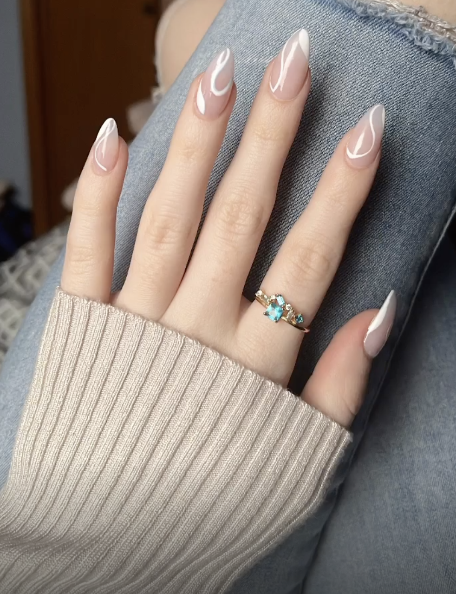

What Nail Shape is Supreme: Square or Almond?

nails Nailsbyonoh

nails Nailsbyonoh
Ogbeide Osarieme: "I think Square shaped nails are better than Almond shaped nails"
Classic and Timeless:
Square nails have been a classic nail shape for years and continue to be a popular choice.
They offer a timeless and elegant look that complements various styles and outfits.
Durability:
Square nails have a flat edge that is less likely to break or chip compared to almond nails,
which have a pointed tip. This makes square nails a practical choice for individuals with
an active lifestyle.
Versatility:
Square nails provide a flat surface, making it easier to apply nail polish or nail art.
They allow for a variety of designs and colors, enhancing creativity and self-expression.
Low Maintenance:
Square nails are generally easier to maintain since they don't require as much reshaping or filing as almond nails.
This saves time and effort for those with a busy schedule.
nails Nailsbyonoh

nails Kathy Nails
Katrina MacAdams: "Square shaped nails are ugly. Almond is totally better... no offence."
Aesthetic: Almond nails are considered more elegant and graceful than square nails.The curved shape of almond nails can make fingers appear longer and more delicate, adding a touch of sophistication to one's overall appearance.
Comfort:
Almond nails are more comfortable to wear because of their natural shape, which aligns better with the shape of the fingertips.
Square nails feel bulkier and less ergonomic.
Current Fashion Trends:
Almond nails have gained popularity in recent fashion trends,
making them the preferred choice for many individuals who want to stay in vogue.
is enough to make the arguement that they look waymore natural than square! I mean who asks someone with square nails that?.
Thank you for reading the debate, what shape of nail do you prefer?